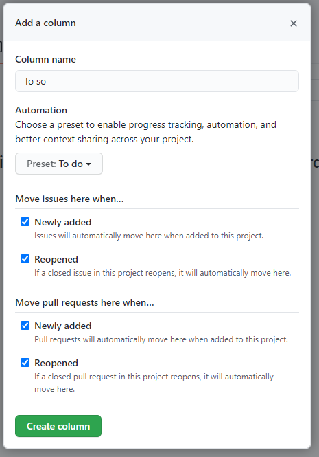
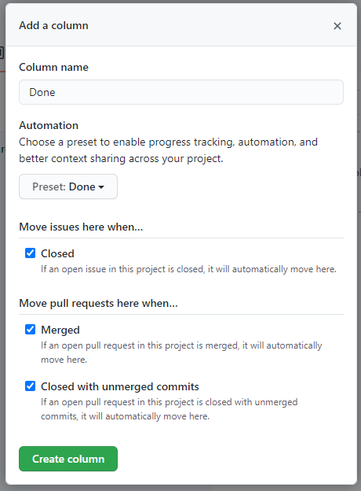

Sähköisten asiointipalveluiden toteuttaminen
Suunnittelu
Tällä Orientaatio-kurssilla on tarkoitus suunnitella sähköisten asiointipalveluiden lopputyötä. Toteutus tehdään sitten Leenan tuntien puolella. Tarkoitus on käytännössä tehdä tehtävälista ja aikataulutus, ulkoasusuunnitelma sekä mahdollista kuvankäsittelyä tämän kurssin puolella.
GitHub Project
Projectiseinä on hyvin paljon samanlainen kuin kokeilemamme Trello. GitHubin projektiseinä on kevyt Kanban-työkalu jolla pienet projektit hoituvat helposti.
- Board on tietyn repon sisällä
- Board sisältää issue-kortteja
- Yksi issue voi olla mukana usealla Boardilla
Lisätietoa: https://blog.codetree.com/articles/the-important-differences-between-github-projects-and-codetree.html
1. Tehtävien suunnittelu
- Luo uusi yksityinen repo githubin alle tai käytä Sähköisen asiointipalvelun repoa.
- Valitse Projects / Create a project
- Nimeä projekti järkevästi (esim. omanimi packraft).
- Lisää kuvaukseen esimerkiksi tieto mistä kurssista kysymys (sähköisten asiointipalveluiden toteuttaminen ja orientoituminen ammattialan työtehtäviin).
- Lisää kolme saraketta (column): To Do, In Progress ja Done 
- Lisää To do-sarakkeeseen tehtävät joita projekti
Lisää seuraavaksi Issue-kortteja projektillesi.
- Voit myös tehdä ensin Note-merkintöjä ja muuttaa ne sitten Issue-tyyppisiksi.
Tehtävistä
- Tutustu Leena Järvenkylä-Niemen julkaisemaan materiaaliin 2008TiviPOk02-tiimissä.
- Mieti mitä tehtäviä tästä kokonaisuudesta tulisi.
- Lisää tehtäviksi myös GitHub-projektiseinä, Aikataulun esittely ja Käyttöliittymäproton esittely.
- Mitä muita tehtäviä tulisi olla? Mieti tehtävää ja yritä pilkkoa asioita sopiviksi palasiksi.
- Suunnittelu
- Web-ulkoasun suunnittelu
- Aikataulun esittely
- jne.
- Toteuttaminen
- CSS-tyylitiedoston toteuttaminen
- Varauslomakkeen toteuttaminen
- Kuvagallerian toteuttaminen
- jne.
2. Ulkoasun suunnittelu
Käytetään ulkoasun suunnittelussa Figmaa.
Esittele GitHub-projektiseinälle tekemäsi aikataulu ennen ulkoasusuunnitelman aloittamista.
- Ulkoasusuunnitelma kotisivuista
- Pyri tekemään oikean nettisivun näköinen.
- Onko kotisivu yhdellä sivulla peräkkäin ("bootsrap"-malliin)
- Onko kotisivut jaettu linkeillä eri sivuille
- Käytä Leenan Teams-kansiosta löytyviä kuvamateriaaleja
- Mitä pitäisi sisältää?
- ulkoasu kotisivuista
- mobiilinäkymä yleisesti
- JavaScript-reitti-jutun suunnitelma
3. Suunnittelun palautus
Palautus tapahtuu GitHubin kautta.
4. Toteutus
Sivuston toteutusta voidaan tehdä Orientaation ja Leenan Sähköisten asiointipalveluiden tunneilla.